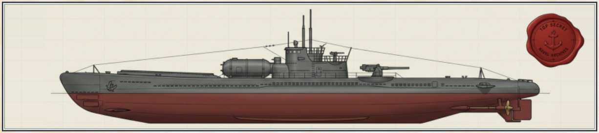

⚓ 1. Selección de Submarino Imperial 18 Clases IJN
📖 Guía Táctica del Manual: Comparativa de los 5 Torpedos IJN
👤 2. Comandante y Dotación (Tabla H2) Oficial IJN

📜 CHART H2: JAPANESE SUB COMMANDER NAMES (TABLA H2 - OPCIONAL)
Tirar 1d6 + 1d6 para Apellido (Surname) y luego 1d6 + 1d6 para Nombre (First Name). Puedes hacer clic directamente en cualquier celda para asignarlo.TABLAS QUE PARTICIPAN EN EL ADIESTRAMIENTO
Utilizada en Captain (Torpedos), XO (Cañón de cubierta) y Minisubmarinos [F2]:
| Rango | Distancia | Tirada 2d6 Requerida |
|---|---|---|
| Corta (Close) | 0 – 1,500 m | 2 – 8 (Tirada ≤ 8) |
| Media (Medium) | 1,500 – 3,000 m | 2 – 7 (Tirada ≤ 7) |
| Larga (Long) ★ | > 3,000 m | 2 – 6 (Tirada ≤ 6) |
Utilizada en el adiestramiento del Jefe de Máquinas (Engineer):
¡Superado!
¡Implosión!
Utilizadas en Chart F2 (Escuela de Minisubmarinos):
• 2–4: Atrapado en red (Fallo)
• 5–9: Cruce con sigilo (Aprobado)
• 10–12: Evita la barrera defensiva
• Tira 2 veces 1d6 en [M7]. Ambas tiradas deben ser 4–6 (éxito de recuperación) para no fallar y ganar la habilidad Superior Comms (+1 drm permanente).
Ventajas para cada piloto suicida Kaiten [Reglas 4.8.4 & 7.18]:
CHART F1: ESCUELA DE SUBMARINOS (KURE)


🤿 TABLA [F2]: ESCUELA DE MINISUBMARINOS KO-HYOTEKI
Adiestramiento Opcional Sin tirar
Sin tirar
 Sin tirar
Sin tirar
 Sin tirar
Sin tirar
✈️ TABLA [F3]: ESCUELA NAVAL DE AVIACIÓN DE KASUMIGAURA
🚀 TABLA [F4]: ESCUELA DE ADIESTRAMIENTO KAITEN DE OTSUJIMA
1. Asignación del Área de Operaciones
2. Gran Evento Histórico y Misión Especial [7.0]
Se resolverá en la casilla de misión especial en ruta a estación.
🗂️ BANDEJA DE FICHAS DE DESTINOS Y MISIONES ESPECIALES [DOBLE CARA]
🗺️ CHART A1: PATROL ASSIGNMENT (TABLA A1 - 2d6)
Lanza 2d6 para determinar el área de operaciones según el período histórico (Regla 7.14).| 2d6 | 1941 | 1942 Jan-Jun | 1942 Jul-Dec | 1943 Jan-Jun | 1943 Jul-Dec | 1944 Jan-Jun | 1944 Jul-Dec | 1945 Jan-Jul |
|---|
1. Progreso de Casillas de Navegación
2. Tirada de Encuentros en Tabla [A3]
Lanza 2d6 en cada casilla de estación o tránsito:
3. Casilla de Misión y Eventos
Casilla de Misión: La primera casilla que no es de tránsito activa la Misión Especial:
- Mini-Submarinos (Mapas M1-M7)
- Reconocimiento Aéreo (Tablas P1-P6)
- Lanzamiento Kaiten (Mapas K2-K3)
- Minado o Transporte Tokio Express
⚓ CHART A3: PATROL AREA ENCOUNTERS (ENCUENTROS EN ÁREA - 2d6)
Tabla de contactos por zona de operaciones. Lanza 2d6 al entrar en cada casilla de patrulla o tránsito.| Tirada 2d6 | Encuentro en Zona | Efecto Táctico / Procedimiento |
|---|
Hasta Julio 1942: Las casillas de tránsito no tienen encuentros ordinarios (solo un 12 natural activa Evento B11). Desde Agosto 1942 se aplican encuentros ordinarios de columna Transit. Cualquier contacto detectado se gestiona y resuelve en la pestaña Patrulla.
🚀 Ver Tablas Especiales de Mini-Submarino Ko-hyoteki [Charts M5, M6, M7]
Transit Circle: 2 Aircraft, 4/7/10 Event, 12 Warship.
Target Circle: 2 Ship, 3 2x Ships, 5 Warship+Ship, 10-12 Capital Ships.
Red Antisubmarina (2d6): 2 Capturado (Seppuku), 3 Capturado por ASV, 4-12 Cruza con éxito.
4-6: Recuperado con éxito por Submarino Nodriza.
DRM: +1 Comms superiores (Escuela F2), -1 Radio inop.
🚢 1. Contacto Naval (Ship / Buque de Guerra / Buque Capital)
SuperficieAl obtener Ship, Warship o Capital Ship en la Tabla [A3], se genera el buque blanco según las tablas oficiales T1 (Mercante), T2 (Escoltado/Petrolero) o T3 (Buque de Guerra).
| Encuentro [A3] | Dado 1d6 | Tabla Blanco | Tipo & Escolta |
|---|---|---|---|
| Ship / Ship* | 1 - 4 | Tabla T1 | Mercante pequeño (Sin escolta) |
| Ship / Ship* | 5 - 6 | Tabla T2 | Mercante grande / Petrolero (Con escolta) |
| Buque de Guerra | 1 - 6 | Tabla T3 | Destructor / Crucero (Con escolta) |
| Buque Capital | 1 - 6 | Tabla T4 / T5 | Acorazado / Portaaviones (Alta escolta) |
✈️ 2. Amenaza Aérea (Encuentro Aéreo)
AéreoAl obtener Aircraft en la Tabla [A3], el submarino es sorprendido desde el aire. Elige de inmediato entre Inmersión de Emergencia (Tabla A4) o defenderte en superficie con Fuego Antiaéreo (Tabla A2).
| Tirada Final | Resultado | Efecto Operativo |
|---|---|---|
| ≤ 1 | 2 x Ataques Aéreos | 2 pasadas con bombas + 1 herida automática de dotación |
| 2 - 5 | 1 x Ataque Aéreo | 1 pasada con bombas + 1 herida automática de dotación |
| 6 - 12 | Inmersión Exitosa | Submarino sumergido a salvo. Sin daños sufridos. |
• Planos inmersión averiados: -1 | Radar a bordo: +1 | Noche: +1 | Minado/Especial: -1
| Tirada 2d6 | Efecto contra Avión | Consecuencia |
|---|---|---|
| 2 - 3 | ¡Avión Derribado! | Avión destruido antes de lanzar bombas. Victoria limpia. |
| 4 - 5 | Avión Dañado | Ataque interrumpido. Avión se retira con averías. |
| 6 - 12 | Fallo (Miss) | El avión enemigo bombardea el submarino. |
Paso 1: Identificación y Momento del Día [8.1.3 - 8.1.10]
Paso 2: Selección de Alcance [8.2.1]
Paso 3: Modalidad de Ataque [8.2.2]
Paso 4: Asignación y Disparo de Torpedos [8.2.3 - 8.2.7]
Paso 5: Detección y Ataque de Escoltas (Tablas B4, B5, B6) [8.2.8, 8.4]
Evalúa si la escolta te detecta acústicamente (Chart B4) y resuelve las cargas de profundidad (B5 & B6):
🎯 TABLAS DE COMBATE TÁCTICO [CHARTS B1 - B6]
Impactos, torpedos inertes, daño, detección por escoltas, contraataque de cargas y averías de submarino.| Corta Distancia (Close) | Alcance Medio (Medium) | Larga Distancia (Long) |
|---|---|---|
| 2 - 8 Hit 9-12 Miss |
2 - 7 Hit 8-12 Miss |
2 - 6 Hit 7-12 Miss |
★ Tirada de "2" = Impacto Crítico (+3 daño si no es inerte).
Tirar 1d6 por impacto: 1 = Dud / Inerte (sin daño). 2-6 = Explota normal.
★ Ataque Especial FIDO (5/44+): Avión lanza torpedo guiado: 1=Hundido, 2=7 impactos, 3-6=fallo/dud.
| Tirada 1d6 | Torpedo | Cañón de Cubierta |
|---|---|---|
| 1 | 4 Daños | 3 Daños |
| 2 - 3 | 3 Daños | 2 Daños |
| 4 | 2 Daños | 1 Daño |
| 5 - 7 | 1 Daño | 1 Daño |
• Acorazado / Portaaviones (Buque Capital): 5 - 7 puntos (Ver Chart T4)
• 10.000+ t: 4 puntos | 5.001 - 9.999 t: 3 puntos
• 1.001 - 5.000 t: 2 puntos | ≤1.000 t: 1 punto
2-8: No detectado | 9-10: Detectado | 11+: Detectado (+1 ataque escolta)
DRMs: +1 Tanques rotos, +1 Planos rotos, +1 Buque Capital, +1 Día con vapor, +1 Detección previa, +1 Corta Dist., -1 Larga Dist., -1 Profundidad límite, +1 en 1943, +2 en 1944, +3 en 1945.
| Tirada 2d6 | Impactos Sufridos |
|---|---|
| 2 - 3 | Ineficaz (0 impactos) |
| 4 - 6 | 1 Impacto |
| 7 - 8 | 2 Impactos |
| 9 - 10 | 3 Impactos |
| 11 | 4 Impactos |
| 12 | 5 Impactos |
| 13+ | SUBMARINO HUNDIDO |
★ Erizo (Hedgehog 5/44+): 1-2 impacto, si acierta: 1=5 hits, 2=7 hits, 3-6=hundido.
| 11 | Baterías | 41 | Casco |
| 12 | Inundación | 42 | Radio |
| 13 | Radar | 43-44 | Inundación |
| 14 | Periscopio | 45 | Casco |
| 15 | Planos de Inmersión | 46 | Cañón AA |
| 16 | Motor Eléctrico 1 | 51 | Inundación |
| 21 | Inundación | 52 | Casco |
| 22 | Motor Eléctrico 2 | 53 | Baja Tripulación x2 |
| 23-25 | Motor Diésel 1/2 | 54 | Inundación x2 |
| 24-26 | Hangar / Grúa | 55 | Casco |
| 31 | Inundación | 56 | Cañón de Cubierta |
| 32 | Mini-Submarino / Daihatsu | 61 | Hidrófonos |
| 33-35 | Casco | 62 | Compuertas Torpedo Popa |
| 34 | Baja Tripulación | 63-64 | Compuertas Proa (impar/par) |
| 36 | Cañón Cubierta / Kaiten | 65 | Casco x2 |
| 66 | Tanques de Combustible |
1. Control de Daños e Inundación (Tabla B7) [8.5.2]
Al concluir el combate o en cada ronda de inundación, resuelve las tiradas según la Tabla B7:
2. Bajas de Tripulación y Retirada
Si la tripulación recibe un impacto durante el combate, tira en la tabla de bajas B7:
Criterios de regreso obligatorio a base [Regla 8.6]:
- Tanques de combustible INOP / con fugas.
- Fallo de 1 motor diésel (regreso con 2 tiradas de encuentro por casilla). Si fallan ambos: remolcado si dista 1 zona, o barrenado.
- Navegante al mando como Capitán si cae herido grave o muerto.
- Casco al límite: si se marcan todas las casillas de casco, el submarino se hunde.
🛠️ TABLA B7: AVERÍAS DEL SUBMARINO Y BAJAS DE TRIPULACIÓN (TABLA OFICIAL B7)
Efectos tácticos de las averías, probabilidades de reparación en el mar (1d6) y tabla completa de bajas de tripulación.| 2d6 | Puesto afectado | Gravedad 1d6 |
|---|---|---|
| 2 | Comandante | 1-3: Herida leve (LW - sin efecto) 4-5: Herida grave (SW - incapacitado) 6: Muerto en combate (KIA) ★ 2 LW = SW | 2 SW = KIA |
| 3 | Ingeniero | |
| 4 | Oficial ejecutivo | |
| 5 | Médico | |
| 6-10 | Dotación | |
| 11 | Navegante | |
| 12 | Piloto / Midget / Kaiten |
- Comandante: El segundo toma el mando. +1 a detección, +1 a impactar.
- Oficial ejecutivo: Si ya mandaba, el tercer oficial asume: +1 a detección, +1 a impactar.
- Ingeniero: Tiradas de reparación a +1 DRM (más difícil), incluida la contención de inundación.
- Médico: Todos los tripulantes con SW mueren (KIA) al cruzar cada zona con 4-6 en 1d6.
- Dotación: Si todas las casillas genéricas están SW/KIA: +1 a impactar con torpedos.
- Piloto / Midget / Kaiten: La misión especial fracasa de inmediato.
1. Cálculo del Periodo de Puesta a Punto (Meses "R")
2. Ascensos de Rango, Calidad de Dotación y Medallas [8.7 - 8.9]
Adquisición de Habilidades:
Por cada 3 patrullas exitosas (o cada 2 si el Capitán posee la habilidad Leadership), se adquiere una nueva habilidad para el Capitán/Oficiales en Chart K1 o se asciende la calidad de la dotación (Trained ➔ Crack ➔ Elite).
Ascenso Anual de Rango:
Chequeo de promoción en diciembre de cada año según tonelaje acumulado y condecoraciones activas.
⚓ CHART H3: REFIT DURATION, PUERTO Y CONDECORACIONES IMPERIALES
Cálculo oficial de permanencia en astillero, incursiones aéreas enemigas (1944+) y condecoraciones del Emperador.| Mantenimiento Estándar: | 1 Mes ("R") |
| Sistemas Inoperativos (INOP): | 3+ sistemas = +1 Mes |
| Daños en el Casco (Hull): | 1-3 = +1 Mes | 4-6 = +2 Meses | 7-8 = +3 Meses |
| Reasignación de Comandante: | Total Refit ≥ 5 meses = Nuevo submarino |
En cada Refit desde 1/44, chequear daño aéreo en cualquier puerto excepto Paramushiro (2d6):
| 2: | Submarino destruido. 1 mes para transferirse a nuevo buque en Yokosuka. |
| 3: | Daño severo en ataque aéreo. Añadir +2 meses al refit actual. |
| 4: | Daño en ataque aéreo. Añadir +1 mes al refit actual. |
| 5-12: | Sin efecto (No effect). |
| Condecoración | Criterio de Concesión |
|---|---|
| Orden del Milano Dorado (4.ª clase) (Kinshi Kunsho) [8.8.1] |
Hundir un Buque Capital o lograr >20.000 t en una sola patrulla. Concede 1 Upgrade. |
| Orden del Milano Dorado (5.ª clase) (Kinshi Kunsho) [8.8.2] |
Hundir un Buque Capital o lograr >15.000 t en una sola patrulla. Concede 1 Upgrade. |
| Orden del Sol Naciente (8.ª clase) (Kyokujitsu-sho) [8.8.3] |
Acumular ≥ 20.000 toneladas totales de buques enemigos hundidos. |
| Orden del Tesoro Sagrado (8.ª clase) (Zuiho-sho) [8.8.4] |
Acumular ≥ 15.000 toneladas o completar 3 patrullas exitosas. |
| Medalla de Herido en Combate (Sensho Kisho) [8.8.5] |
Otorgada al Capitán o dotación al recibir heridas graves (SW) en combate. |
| Medalla Guerra Gran Asia Oriental (Daitoa Senso Jugun Kisho) [8.8.6] |
Completar con éxito al menos 1 patrulla de combate en Dic-1941 o Ene-1942. |
| Insignia de Submarinos (Sensuikan Kisho) [8.8.7] |
Graduarse en la Escuela de Kure [F1] o completar 1 patrulla exitosa. |

Segundo Oficial (XO)
Jefe de Máquinas
Navegante
Médico
Piloto Kaiten #1
Piloto Kaiten #2
Piloto Kaiten #3
Piloto Kaiten #4
Piloto Kaiten #5
Piloto Kaiten #6

SUBMARINE PATROL LOG
| Date | Patrol: | Targets: | Tonnage: | Milestones & Notes | |||||||
|---|---|---|---|---|---|---|---|---|---|---|---|
| 1 | 2 | 3 | 4 | 5 | 6 | 7 | 8 | ||||
| TOTAL PATROLS: 0 | SPCL MISSIONS: 0 | SHIPS SUNK: 0 | TOTAL TONNAGE: 0 t | ||||||||
EXPEDIENTE DE SERVICIO DEL COMANDANTE (職歴・軍歴) • IJN DOSSIER
⚓ Biografía e Historial de Mando
⭐ Jerarquía de Mando y Ascensos (Regla 8.9)
| Rango Militar (階級) | Beneficio de Mando y Reglas |
|---|---|
|
Lt. Cdr / Shōsa (少佐) Rango Inicial (12/41) |
Rango inicial estándar sin habilidades especiales de mando. |
|
Commander / Chūsa (中佐) Tirada tras 12 meses |
Solicitar Destino: Con 1 en 1d6 al inicio de patrulla, elige libremente su área de destino activa en Tabla [A1]. |
|
Captain / Taisa (大佐) Tirada tras 24 meses |
Solicitar con 1–2 en 1d6 en Tabla [A1], y reduce en -1 mes las reparaciones en puerto si son ≥ 3 meses. |
🏅 Condecoraciones y Medallas Oficiales de la Armada Imperial (Regla 8.8)
| Condecoración (勲章) | Requisito Oficial de Concesión (Regla 8.8) | Efecto en Juego | Estado |
|---|---|---|---|
| Submarine Badge (潜水艦記章) | Graduación en la Escuela de Submarinos de Kure [F1]. | Acreditación oficial de comandante de sumergible. | ✔ Otorgada |
| Greater East Asia War Medal (大東亜戦争従軍記章) | Completar la primera patrulla de guerra (éxito o fracaso). | Distinción de veterano de guerra de campaña. | 1.ª Patrulla |
| The Order of the Golden Kite, 5th Class (金鵄勲章 五等) | Hundir 1 Buque Capital o lograr >50.000 t en 1 patrulla (Lt. Cdr). | -1 permanente a todas las tiradas de detección enemiga [B4]. | Pendiente |
| The Order of the Golden Kite, 4th Class (金鵄勲章 四等) | Hundir 1 Buque Capital o 100.000 t acumuladas (Commander / Captain). | -1 permanente a detección enemiga [B4] (no acumulable con 5.ª). | Pendiente |
| Order of the Sacred Treasure, 8th Class (瑞宝章 八等) | Alcanzar 12 meses de servicio activo en campaña (Regla 8.8.4). | Mérito por servicio prolongado de combate. | 12 Meses |
| Order of the Rising Sun, 8th Class (旭日章 八等) | Alcanzar 24 meses de servicio activo en campaña (Regla 8.8.3). | Mérito militar distinguido al Emperador. | 24 Meses |
| The Wound Badge (傷痍軍人記章) | Resultar herido grave (SW) en combate durante una patrulla. | Distinción de herido de guerra en acto de servicio. | En Combate |
Junsen Type B Class
Otsu-gata Sensuikan • Fleet Submarine
Historical notes...

SENSUIKAN (Mapa Operativo del Pacífico 1941–45)


📚 COMPENDIO GENERAL DE TODAS LAS TABLAS OFICIALES
⚓ 1. TABLAS DE PATRULLA Y ENCUENTROS (CHARTS A1 - A4)
CHART A1: PATROL ASSIGNMENT (2d6)
Regla 7.14| 2d6 | 1941 | 42 Ene-Jun | 42 Jul-Dic | 43 Ene-Jun | 43 Jul-Dic | 44 Ene-Jun | 44 Jul-Dic | 45 Ene-Jul |
|---|
CHART A2: AA DEFENSE (2d6 🎲🎲)
Regla Oficial [8.3.2 / 8.3.5]CHART A4: AIRCRAFT ENCOUNTER (2d6 🎲🎲)
Regla Oficial [8.1.7 / 8.3]CHART A3: ENCOUNTER CHART (2d6 - 10 ZONAS, TRÁNSITO, MISIÓN ESPECIAL Y MINAS)
| 2d6 | Transit | W. Coast / Ind. Ocean |
Phil. / Aleutians |
Midway | Marianas / Australia |
Pearl Harbor |
New Guinea / Guadalcanal |
Okinawa / Iwo Jima |
Tarawa (Marshalls) |
DEI / Malaya |
Special Mission |
Minefield |
|---|
🎯 2. COMBATE TÁCTICO, TORPEDOS Y ESCOLTAS (CHARTS B2, B4, B5, B6, B7, H1)
SENSUIKAN (Submarinos de Flota Japoneses 1941–45)
TABLA [B1] DISPARO DE TORPEDOS Y CAÑÓN DE CUBIERTA (IMPACTO)
🎲 2d6 (Tirada Baja)TABLA [B2] TORPEDOS INERTES (DUDS)
🎲 1d6TABLA [B3]: DAÑOS AL BLANCO
🎲 1d6| 1d6 | Torpedo | Cañón Cubierta |
|---|---|---|
| 1 | 4 Daños | 3 Daños |
| 2 | 3 Daños | 2 Daños |
| 3 | 3 Daños | 2 Daños |
| 4 | 2 Daños | 1 Daño |
| 5 | 1 Daño | 1 Daño |
| 6 | 1 Daño | 1 Daño |
| 7+ | 1 Daño | 1 Daño |
• +1 Torpedos Tipo 89, Tipo 92 o Tipo 6
• -1 Torpedo Tipo 97 de Minisubmarino
4 Daños: Buques de 10,000+ t
3 Daños: Buques de 5,001–9,999 t
2 Daños: Buques de 1,001–5,000 t
1 Daño: Buques de 1,000 t o menos
TABLA [B4]: DETECCIÓN POR ESCOLTAS
🎲 2d6+1 Planos de inmersión averiados
+1 Presencia de Buque Capital
+1 Submarino a vapor / de día
+1 Torpedo T.95 de día a corta distancia
+1 Detección previa en el turno
+1 A corta distancia (Close Range)
-1 A larga distancia (Long Range)
+1 Ataque nocturno en superficie
+1 Disparo simultáneo proa + popa (1.er turno)
-1 Exceder profundidad de test (Test Depth)
-1 En el Océano Índico
+1 / +2 / +3 en los años 1943 / 1944 / 1945
TABLA [B5]: ATAQUE DE ESCOLTAS
🎲 2d6| 2–3 | Ineficaz |
| 4–6 | 1 impacto |
| 7–8 | 2 impactos |
| 9–10 | 3 impactos |
| 11 | 4 impactos |
| 12 | 5 impactos |
| 13+ | Hundido |
+1 Hidrófonos averiados
+1 Baterías dañadas
+1/+2 Motores eléctricos averiados
+1 Ataque nocturno en superficie (1.er turno)
+1 Por detección con 11+
+2 Ataque de aviación
Si impacta, tirar 1d6 de nuevo:
1 = 5 impactos | 2 = 7 impactos | 3–6 = Hundido
TABLA [B6] CASILLAS DE DAÑO AL SUBMARINO (d66)
🎲 1d6 (Decenas) + 1d6 (Unidades) ➔ d66Un impacto en Minisubmarino cuenta como impacto a Lancha Daihatsu si estuviese instalada.
CHART B5 (ESCORT / AIR ATTACK - 2d6) & CHART B6 (SUB DAMAGE - d66)
• 2–3: Ineficaz (Ineffective)
• 4–6: 1 Impacto (1 hit)
• 7–8: 2 Impactos (2 hits)
• 9–10: 3 Impactos (3 hits)
• 11: 4 Impactos (4 hits)
• 12: 5 Impactos (5 hits)
• 13+: ¡SUBMARINO HUNDIDO!
Especial Hedgehog (5/44+): 1-2 impacta (1=5 hits, 2=7 hits, 3-6=hundido).
• 11: Baterías | 12, 21, 31, 43, 44, 51: Inundación | 13: Radar
• 14: Periscopio | 15: Planos de inmersión | 16, 22: Motor eléctrico 1/2
• 23, 25: Motor diésel 1/2 | 24: Hangar | 26: Grúa | 32: Minisubmarino
• 33, 35, 41, 45, 52, 55: Casco | 34, 53: Bajas en tripulación (x1 / x2)
• 36, 56: Cañón de cubierta | 42: Radio | 46: Artillería AA
• 54: Inundación x2 | 61: Hidrófonos | 62-64: Compuertas torpedos
• 65: Casco x2 | 66: Tanques de combustible
🛠️ CHART B7: SUBMARINE DAMAGE LISTINGS (AVERÍAS Y REPARACIONES)
Marcar 1 casilla. Si se llenan todas, emerger de emergencia y comprobar si se barrena. En cada ronda de inundación, tirar 1d6 por el Ingeniero:
1-4: Contenida | 5-6: Inundación adicional.
Tras el combate, la inundación se achica por completo.
Marcar 1 casilla. Si se marcan todas las casillas de integridad de casco, el submarino se hunde.
¡El daño de casco no es reparable en alta mar!
1 Diésel KO: Regreso obligatorio a base. Doble tirada de encuentros por zona. 2 Diésel KO: Barrenado si >1 zona de base, o remolcado si dista 1 zona.
1 Eléctrico KO: +1 en B5 de inmediato. 2 Eléctricos KO: +2 en B5.
Reparación tras combate (1d6 por motor): 1-4: Reparado | 5-6: INOP.
Fuga de combustible. Durante combate: +1 Detección Y +1 en Chart B5. Si no se repara, regreso obligatorio a base.
Reparación tras combate (1d6): 1-3: Reparado | 4-6: INOP.
Sin efecto inmediato. A partir de la siguiente ronda de combate: +1 en Chart B5.
Reparación tras combate (1d6): 1-4: Reparado | 5-6: INOP.
No se pueden realizar ataques sumergidos.
Reparación tras combate (1d6): 1-2: Reparado | 3-6: INOP.
+1 en tiradas de detección de escoltas. También -1 a tiradas en Chart A4.
Reparación tras combate (1d6): 1-2: Reparado | 3-6: INOP.
Compuertas atascadas; los tubos afectados no pueden disparar.
Reparación tras combate (1d6): 1-2: Reparado | 3-6: INOP.
Búsqueda Aérea: pierde el +1 en Chart A4. Búsqueda Superficie: no hay 2ª tirada en A3.
Reparación tras combate (1d6): 1-3: Reparado | 4-6: INOP.
Hidrófonos: No puede maniobrar evasivamente (+1 en B5).
Cañón / AA: Inutilizados.
Reparación (1d6): 1-2: Reparado | 3-6: INOP.
Radio: +4 al rescate si se barrena. -1 a recuperación de Ko-Hyoteki.
Grúa: No puede recuperar hidroavión.
Hangar: Avión destruido.
Reparación (1d6): 1-2: Reparado | 3-6: INOP.
• 2: Captain
• 3: Engineer
• 4: Exec. Officer
• 5: Medic
• 6-10: Generic Crew
• 11: Navigator
• 12: Pilot / Midget / Kaiten
• 1-3: LW (Herida Leve, sin efecto operativo)
• 4-5: SW (Herida Grave, incapacitado)
• 6: KIA (Muerto en Acción)
Regla acumulativa: 2x LW = SW, 2x SW = KIA
• Captain: Primer Oficial toma el mando; Detección +1, To-Hit +1.
• Engineer: Tiradas de reparación e inundación reciben +1 MTD.
• Medic: Tripulantes SW mueren (KIA) tras cada zona de viaje con 1d6 ≥ 4.
• Crew: Si todas las casillas genéricas son SW/KIA, To-Hit torpedos +1.
CHART T1: SMALL FREIGHTER TARGETS (1d100)
Mercantes Pequeños (1-100) • 1-4 en tirada de buque en Chart [A3]CHART T2: LARGE FREIGHTER & TANKER TARGETS (1d100)
Mercantes Grandes y Petroleros (T) (1-100) • 5-6 en tirada de buque en Chart [A3]CHART T3: WARSHIP TARGETS (1d100)
Destructores (DD), Fragatas (DE), Corbetas y Submarinos de Guerra Aliados (1-100)CHART T4: CAPITAL SHIP TARGETS
Acorazados (BB), Portaaviones de Flota (CV), CVL y CVE por año| Dado | Tipo | Buque Capital | Tonelaje | Hundir | Veloc. |
|---|---|---|---|---|---|
| 1 | BB | USS California | 32.300 t | 6 pts | — |
| 2 | BB | USS Maryland | 32.600 t | 6 pts | — |
| 3 | BB | USS Oklahoma | 27.500 t | 5 pts | — |
| 4 | BB | USS Tennessee | 33.200 t | 6 pts | — |
| 5 | BB | USS West Virginia | 32.100 t | 6 pts | — |
| 6 | BB | USS Arizona | 29.200 t | 5 pts | — |
| 7 | BB | USS Nevada | 27.500 t | 5 pts | — |
| 8 | BB | USS Pennsylvania | 31.400 t | 6 pts | — |
| 9 | CV | USS Lexington | 36.000 t | 6 pts | ➡ Fast |
| 10 | CV | USS Enterprise | 25.500 t | 6 pts | ➡ Fast |
| Dado | Tipo | Buque Capital | Tonelaje | Hundir | Veloc. |
|---|---|---|---|---|---|
| 1 | BB | HMS Repulse | 27.200 t | 5 pts | — |
| 2 | BB | HMS Repulse | 27.200 t | 5 pts | — |
| 3 | BB | HMS Repulse | 27.200 t | 5 pts | — |
| 4 | BB | HMS Prince of Wales | 43.800 t | 7 pts | — |
| 5 | BB | HMS Prince of Wales | 43.800 t | 7 pts | — |
| 6 | BB | HMS Prince of Wales | 43.800 t | 7 pts | — |
| Dado | Tipo | Buque Capital | Tonelaje | Hundir | Veloc. |
|---|---|---|---|---|---|
| 1 | CV | USS Wasp | 14.700 t | 5 pts | ➡ Fast |
| 2 | BB | USS Maryland | 32.600 t | 6 pts | — |
| 3 | CV | USS Hornet | 20.000 t | 6 pts | ➡ Fast |
| 4 | BB | USS Tennessee | 33.200 t | 6 pts | — |
| 5 | CV | USS Yorktown | 19.800 t | 6 pts | ➡ Fast |
| 6 | CV | USS Saratoga | 36.000 t | 6 pts | ➡ Fast |
| 7 | BB | USS North Carolina | 37.500 t | 7 pts | — |
| 8 | BB | USS Pennsylvania | 31.400 t | 6 pts | — |
| 9 | CV | USS Lexington | 36.000 t | 6 pts | ➡ Fast |
| 10 | CV | USS Enterprise | 25.500 t | 6 pts | ➡ Fast |
| Dado | Tipo | Buque Capital | Tonelaje | Hundir | Veloc. |
|---|---|---|---|---|---|
| 1 | CV | HMS Hermes | 10.900 t | 5 pts | ➡ Fast |
| 2 | BB | HMS Resolution | 29.100 t | 5 pts | — |
| 3 | BB | HMS Ramillies | 27.800 t | 5 pts | — |
| 4 | BB | HMS Revenge | 30.000 t | 6 pts | — |
| 5 | BB | HMS Royal Sovereign | 30.000 t | 6 pts | — |
| 6 | BB | HMS Warspite | 31.300 t | 6 pts | — |
| Dado | Tipo | Buque Capital | Tonelaje | Hundir | Veloc. |
|---|---|---|---|---|---|
| 1 | BB | USS Colorado | 32.600 t | 6 pts | — |
| 2 | BB | USS South Dakota | 35.000 t | 7 pts | — |
| 3 | BB | USS Alabama | 35.000 t | 7 pts | — |
| 4 | BB | USS Tennessee | 33.200 t | 6 pts | — |
| 5 | BB | USS Washington | 32.100 t | 6 pts | — |
| 6 | CV | USS Essex | 27.100 t | 6 pts | ➡ Fast |
| 7 | CVL | USS Independence | 10.700 t | 5 pts | ➡ Fast |
| 8 | BB | USS Pennsylvania | 31.400 t | 6 pts | — |
| 9 | CV | USS Lexington | 36.000 t | 6 pts | ➡ Fast |
| 10 | CV | USS Enterprise | 25.500 t | 6 pts | ➡ Fast |
| 11 | BB | USS Massachusetts | 35.000 t | 7 pts | — |
| 12 | BB | USS Indiana | 35.000 t | 7 pts | — |
| 13 | CVE | USS Liscome Bay | 7.800 t | 5 pts | — |
| 14 | CVE | USS Santee | 6.500 t | 5 pts | — |
| 15 | BB | USS Iowa | 45.000 t | 7 pts | — |
| 16 | BB | USS Missouri | 45.000 t | 7 pts | — |
| 17 | BB | USS New Jersey | 45.000 t | 7 pts | — |
| 18 | CVL | USS Princeton | 13.000 t | 5 pts | ➡ Fast |
| 19 | BB | USS New Mexico | 32.000 t | 6 pts | — |
| 20 | BB | USS West Virginia | 32.100 t | 6 pts | — |
CHART T5: CW WARSHIPS
Commonwealth (1d20)TABLAS F1, F2 Y F3: ESCUELAS NAVALES Y ADIESTRAMIENTO (OFICIAL COMPASS GAMES)
Regla Oficial 4.8TABLA [F1]: ESCUELA DE SUBMARINOS DE KURE (OBLIGATORIA)
• Capitán (Torpedo Training): 3 tiradas en Tabla [B1] a Larga Distancia (≤ 6 / 2 a 6). Si logra ≥ 2 impactos ➔ gana la habilidad Torpedo Gunnery (repite 1 fallo de torpedo por patrulla).
• Segundo Oficial / XO (Deck Gun Training): 3 tiradas en Tabla [B1] a Larga Distancia. Si logra ≥ 2 impactos ➔ gana Deck Gun Expert (-1 DRM a todas las tiradas de cañón de cubierta).
• Jefe de Máquinas / Engineer (Judgment Training): Superar profundidad de prueba 3 veces consecutivas comenzando con 3 daños de casco. Si no hay implosión ➔ gana Keen Judgment (evita el daño de casco en la 1.ª superación de profundidad por patrulla).
• Actividades de Ocio y Tradición (Elegir 1 beneficio):
1. Artes Marciales (Budo): Gana la ficha Shibumi (supera con éxito automático 1 tirada de dado por patrulla).
2. Estudio Técnico Extra: 1 mejora gratis de submarino (Sub Upgrade) y -2 a la 1.ª tirada de Ascenso.
3. Meditación Gosei: Inicia la campaña con el amuleto protector Maneki Neko (gato de la suerte a bordo).
• Graduación en Kure: Se coloca la insignia oficial de submarinista Sub Badge en el uniforme en Chart [K1].
TABLA [F2]: ESCUELA DE MINISUBMARINOS KO-HYOTEKI
• Adiestramiento de Torpedos (Torpedo Training): 3 tiradas en [B1] a Larga Distancia. Si ≥ 2 impactos ➔ gana la ficha Midget Torpedo Gunnery.
• Comunicaciones Navales (Communications): 2 tiradas en Recuperación [M7]. Si no hay fallo ➔ gana Superior Comms (+1 drm en recuperación).
• Maniobra y Redes (Boat Handling): 3 tiradas en Tabla de Redes [M5]. Si ninguna es 2–4 ➔ gana Boat Handling (resultado 4 = Atraviesa la Red).
TABLA [F3]: ESCUELA NAVAL DE AVIACIÓN DE KASUMIGAURA (Elegir 2)
• Experto en Armamento (Weapons Expert): Bombardeo aéreo con +1. Ametralladora defensiva trasera a -1 para impactar.
• Mantenimiento Impecable (Flawless Maintenance): Permite repetir 1 tirada de avería o percance del hidroavión por misión.
• Maniobras de Combate Aéreo (ACM): Reduce en 1 el primer daño recibido en combate aéreo defensivo.
• Navegación Aérea (Aerial Navigation): Suma +1 drm a la tirada de recuperación del hidroavión por el submarino nodriza.
TABLAS B8 A B12: CALIDAD VARIABLE, GIRO CIRCULAR Y EVASIÓN
| Año | Green (Novata) | Trained (Entrenada) | Veteran (Veterana) | Elite (Élite) |
|---|---|---|---|---|
| 41-42 | 1 | 2 - 5 | 6 | -- |
| 43-44 | 1 | 2 - 4 | 5 | 6 |
| 1945 | 1 | 2 - 3 | 4 - 5 | 6 |
• Trained: Normal según tablas.
• Veteran: Causa +1 impacto adicional en [B5].
• Elite: +1 a Detección en [B4] y +1 impacto en [B5].
| Año | Green | Trained | Veteran | Elite |
|---|---|---|---|---|
| 41-42 | 1 | 2 - 5 | 6 | -- |
| 43-44 | 1 | 2 - 4 | 5 | 6 |
| 1945 | 1 | 2 - 3 | 4 - 5 | 6 |
• Trained: Normal.
• Veteran: +1 impacto en [B5].
• Elite: +1 impacto en [B5] y 2 bajas automáticas en dotación (en vez de 1).
Si obtienes una tirada de 12 al disparar un torpedo en [B1], existe riesgo de que describa un círculo y regrese contra tu submarino:
| Tirada 2d6 | Resultado |
|---|---|
| 2 – 11 | Fallo normal (Normal Miss). Pasa de largo. |
| 12 | ¡Giro Circular! Tira 2d6: 2-5 Impacto, ¡Hundido si no es inerte! |
El jugador elige o tira su rumbo evasivo (1d6) antes de que la escolta lance su contraataque (1d6):
| Dado (1d6) | Rumbo Elegido / Maniobra |
|---|---|
| 1 – 2 | Izquierda (Port / Left) |
| 3 – 4 | Derecha (Starboard / Right) |
| 5 – 6 | Recto (Straight Ahead) |
👤 3. COMANDANTE, TRIPULACIÓN Y EVENTOS HISTÓRICOS (TABLAS H2, K1, B11)
CHART H2: JAPANESE SUB COMMANDER NAMES (1d6 + 1d6)
APELLIDOS
NOMBRES DE PILA
CHART B11: RANDOM HISTORICAL EVENTS (OFICIAL 2d6)
Regla 8.1.8: Se activa con el 1.er resultado de 12 natural obtenido en tirada de encuentro| 2d6 | Nombre del Evento | Efecto Oficial en Campaña |
|---|
🛠️ 4. REFIT EN PUERTO Y ESCALA DE VICTORIA DE CAMPAÑA
BASES NAVALES [4.7], REFIT [8.5.11] E INCURSIONES AÉREAS [4.7.6]
NIVELES DE VICTORIA DE CAMPAÑA (GRT HUNDIDO)
| Tonelaje Hundido | Nivel de Victoria de Campaña | Condecoración Imperial Máxima |
|---|
⚓ 5. OPERACIONES ESPECIALES DE MINISUBMARINOS KO-HYOTEKI (CHARTS M5 A M9)
SENSUIKAN (Submarinos de Flota Japoneses 1941–45)
TABLA [M5]: ENCUENTROS Y REDES ANTISUBMARINAS (CHART M5: ENCOUNTERS & NET)
🎲 2d6| Tirada | Encuentro |
|---|---|
| 2 | Aviación (Aircraft) |
| 3 | -- (Sin contacto) |
| 4 | Evento Especial [M6] |
| 5–6 | -- (Sin contacto) |
| 7 | Evento Especial [M6] |
| 8–9 | -- (Sin contacto) |
| 10 | Evento Especial [M6] |
| 11 | -- (Sin contacto) |
| 12 | Buque de Guerra (Warship) |
| Tirada | Encuentro |
|---|---|
| 2 | 1 Buque (Ship) |
| 3 | 2x Buques (2x Ships) |
| 4 | 1 Buque Pequeño, 1 Buque (Ship S, Ship) |
| 5 | 1 Buque de Guerra, 1 Buque (Warship, Ship) |
| 6 | 3x Buques (3x Ships) |
| 7–8 | 1 Buque de Guerra, 2x Buques (Warship, 2x Ships) |
| 9 | 1 Buque de Guerra, 3x Buques (Warship, 3x Ships) |
| 10 | 1 Buque Capital, 1 Buque de Guerra |
| 11 | 1 Buque Capital, 2x Buques de Guerra |
| 12 | 3x Buques Capitales (3x Capital Ships) |
| 2d6 | Resultado del Franqueo |
|---|---|
| 2 | Atrapado Sin Esperanza (Caught): ¡Grito de Banzai al Emperador y Seppuku! Misión fallida. |
| 3 | Atrapado (Caught): Detectado por patrullera ASV. Vuelve a tirar con -1 DRM. |
| 4 | A Través de la Red (Through): Tira detección por patrulleras ASV. (Si la dotación tiene la habilidad de escuela Boat Handling, franquea la red limpiamente sin tirada). |
| 5–12 | A Través de la Red (Through): Franquea la red sin problemas. |
TABLA [M6]: EVENTOS DE MINISUBMARINOS (CHART M6: MIDGET SUB EVENTS)
🎲 2d6| 2d6 | Evento Oficial |
|---|---|
| 2 | Varada (Run Aground): El minisubmarino choca contra un obstáculo no cartografiado. Sufre 1 punto de daño en el Casco (Hull) y tira 2 impactos adicionales. |
| 3 | Interceptación Ultra: Criptoanalistas descifradores de códigos han advertido a las fuerzas aliadas del inminente ataque. Trata cualquier encuentro con Buques Capitales como sin encuentro. |
| 4 | Salida Accidental a Superficie (Broached): El minisubmarino emerge accidentalmente de forma temporal. Tira 2d6 para detección: con 10+, es destruido por baterías costeras o buques ASV. |
| 5 | Avería (Malfunction): Tira 1 punto aleatorio de daño y aplícalo de inmediato. |
| 6 | Vía de Agua (Leak): Marca 1 casilla de inundación (Flooding). No se produce casilla adicional de inundación. |
| 7–8 | Desorientado Momentáneamente (Momentarily Lost): Pasa 1 turno adicional en el círculo actual de tránsito o del objetivo. |
| 9 | Cartas de Navegación Superiores: Concede +1 DRM en la Tabla [M7] para la recuperación por el submarino nodriza. |
| 10 | Maniobra Perfecta (Perfect Boat Handling): Muévete de inmediato al círculo de tránsito o del objetivo que elijas. Ignora cualquier red antisubmarina o comprobación de bucle de detección. |
| 11 | Torpedos Superiores (Superior Torpedoes): No realizas comprobaciones de torpedo inerte (Dud) en esta misión. Si ya disparaste tus torpedos, ignora este evento. |
| 12 | Patrullera ASV Cercana: Tira detección en Chart [B4] a distancia media (Medium Range), sin modificadores salvo el año. Si eres detectado, sufres ataque de escolta normal. Si no, continúa o aborta. |
TABLA [M7]: RECUPERACIÓN DE MINISUBMARINO (MIDGET SUB RECOVERY)
🎲 1d6| 1d6 | Resultado Oficial |
|---|---|
| 1–3 | Perdido (Lost): El minisubmarino no logra conectar con el nodriza y se pierde en el mar (tripulación capturada o KIA). |
| 4–6 | Recuperado por el Submarino Nodriza (Recovered by Mother Sub): Amarre e izado con éxito a bordo. Dotación salvada. |
SENSUIKAN (Submarinos de Flota Japoneses 1941–45)
TABLA [M8]: TABLA DE AVERÍAS DE MINISUBMARINOS (CHART M8: MIDGET SUB DAMAGE TABLE)
🎲 1d6 Rojo (Decenas) + 1d6 Blanco (Unidades) = d66TABLA [M9]: EFECTOS DE LAS AVERÍAS (CHART M9: MIDGET SUB DAMAGE LISTINGS)
📋 Efectos & Reparaciones (1d6)• 5–6: Casilla adicional de inundación
• 1–2: Reparado (Fixed)
• 3–6: Inoperativo (Inoperable)
• 5–6: Reparado (Fixed)
• Hélice: +1 a toda detección por ASV. No reparable.
Vuelve a tirar 1d6 para gravedad:
• 4–5: Herida Grave (SW)
• 6: Muerto en Acción (KIA)
🚀 6. OPERACIONES ESPECIALES KAITEN (CHARTS F4, K5, K6 & COMBATE)
Amuleto de protección cosido a mano. Otorga -3 DRM a una tirada de cruce de arrecife o -1 a la tirada de detección de escoltas.
Cinta con mensaje inspirador. Permite repetir cualquier tirada de encuentro o de evento Kaiten.
El piloto porta las cenizas de un compañero caído. Para honrar su memoria, su ataque impacta automáticamente (sin tirar dado).
Al ser esencialmente un torpedo Tipo 93 Long Lance modificado, 1 solo punto de daño recibido de escoltas lo destruye antes de atacar.
Tirada al llegar al Círculo de Objetivo o por evento "Broached":
• ≤ 8: No detectado (Undetected)
• 9+: Detectado ➔ Sufre ataque inmediato en Tabla [B5].
Elige objetivo y tira 2d6:
• 2 – 10: ¡Impacto! (Hit) | 11 – 12: Fallo (Miss)
• Daño en [B3]: El Kaiten suma +2 puntos de daño adicional (3 a 6 daños).
| 2 | Event |
| 3 | -- |
| 4 | Event |
| 5-6 | -- |
| 7 | Event |
| 8-9 | -- |
| 10 | Event |
| 11 | -- |
| 12 | Event |
| 2-5 | 1x Ship |
| 6-7 | 2x Ships |
| 8 | 3x Ships |
| 9 | 4x Ships |
| 10 | Warship |
| 11 | 2x Warships |
| 12 | Capital Ship |
| 2d6 | Evento | Efecto |
|---|---|---|
| 2 | Encallado (Run Aground) | Choca contra obstáculo sumergido y se pierde el Kaiten. |
| 3 | Intercepción Ultra (Ultra Intercept) | Descifrado alerta al enemigo: cualquier Buque Capital se considera sin contacto. |
| 4 | Fallo de Mandos (Control Failure) | Fallo de gobierno. 1d6: 1= inmersión incontrolada y pérdida del Kaiten; 2-6= recupera control. |
| 5 | Salida Involuntaria a Superficie (Broached) | Sale a superficie. Recupera control, pero tira detección de escoltas de inmediato. |
| 6, 8 | Problemas de Gobierno (Control Problems) | Gobierno difícil: -1 DRM a cruzar arrecifes. Si no ataca el fondeadero de Ulithi, ignora. |
| 7 | Crujido o Golpe de Casco (Bump or Groan) | Ruido inquietante en el casco; causa estrés al piloto pero sin efecto negativo. |
| 9 | Fuga de Combustible (Oil Leak) | Fuga de combustible. Tira 1d6: 6= incendio y Kaiten destruido; 1-5= controla fuga y sigue. |
| 10 | Gobierno Perfecto (Perfect Handling) | Navegación impecable: avanza de inmediato al círculo que elijas, ignorando arrecifes. |
| 11 | Ojiva Reforzada (Superior Warhead) | Ojiva superior: no requiere comprobación de torpedo inerte (dud) en esta misión. |
| 12 | Loss of Bearings | Desorientación: Tira 1d6: 1-3= no halla blancos, agota combustible y se pierde; 4-6= recobra rumbo. |
✈️ 7. OPERACIONES DE HIDROAVIÓN EMBARCADO (CHARTS P3, P4, P5, P6 & REGLA 7.17)
| 2d6 | Transit | Recon | Target (Recon) | Target (Bombing) |
|---|---|---|---|---|
| 2 | -- | Aircraft | Capital Ship | Aircraft |
| 3 | Aircraft | Ship | Warship | -- |
| 4 | -- | -- | CA + DD x6 | -- |
| 5 | -- | -- | DD x6 | AA* |
| 6 | -- | -- | DD x3 | -- |
| 7 | -- | Ship | DD | AA* |
| 8 | -- | -- | CL + DD x3 | -- |
| 9 | -- | -- | Tanker | AA* |
| 10 | -- | -- | CL | -- |
| 11 | -- | Ship Group | Ship Group | -- |
| 12 | Aircraft | Aircraft | Capital Ship | Aircraft* |
• * Applies to Panama Canal Bombing Missions only.
| 1d6 | Resultado (Bombing Effect) |
|---|---|
| 1 - 2 | Miss (Fallo) |
| 3 - 5 | Moderate Damage (Daño Moderado) |
| 6 | Heavy Damage (Daño Severo) |
|
Recon plane chooses # |
...then Fighter Aircraft rolls 1d6: | |||||
|---|---|---|---|---|---|---|
| 1 | 2 | 3 | 4 | 5 | 6 | |
| 1 | 3 | 2 | 0 | E | 1 | 2 |
| 2 | 2 | 3 | 2 | 0 | E | 1 |
| 3 | 1 | 0 | 3 | 2 | 1 | E |
| 4 | E | 1 | 0 | 3 | 2 | 1 |
| 5 | 1 | E | 1 | 0 | 3 | 2 |
| 6 | 2 | 1 | E | 1 | 0 | 3 |
| Roll | Result | Efecto / Detalles |
|---|---|---|
| 2 - 7 | Ineffective | Fuego disperso, sin daños al aparato. |
| 8 | 1 pt. Damage | Close call (Metralla cercana / roce leve). |
| 9 | 1 pt. Damage | Roll crew injury (B8): 1-3 piloto, 4-6 observador. |
| 10 | 2 pts. Damage | Daño estructural severo en fuselaje o alas. |
| 11 | 2 pts. Damage | Roll crew injury (B8): 1-3 piloto, 4-6 observador. |
| 12 | 3 pts. Damage | Direct hit; ¡Hidroavión destruido en el aire! |
🎲 8. REGLAS OPCIONALES Y AVANZADAS DE CAMPAÑA [REGLAS 11.0 & 8.2.9]
[11.1] TONELAJE ESTÁNDAR & [11.2] BLANCOS HISTÓRICOS
• [11.1] Tonelaje Estándar: En lugar de tirar en las tablas T1/T2, puedes asignar tonelajes fijos para acelerar la partida: Mercante Pequeño: 3,500 t | Mercante Grande: 7,000 t | Petrolero: 9,000 t (Los buques de guerra y capitales siempre se tiran).
• [11.2] Blancos Históricos Únicos: Los buques hundidos quedan registrados. Si en una patrulla posterior se obtiene el mismo buque, se repite la tirada: ningún buque puede hundirse dos veces en una carrera.
[11.3] MANIOBRAS EVASIVAS
Al ser detectado por escoltas, el comandante elige en secreto una dirección (1 a 6):
1-2: Izquierda | 3-4: Derecha | 5-6: Recto.
Luego tira 1d6 para la dirección de la escolta:
- Dirección distinta: -1 impacto sufrido en Tabla B5.
- Misma dirección (número distinto): +1 impacto en Tabla B5.
- Número EXACTO igual: +3 impactos sufridos.
[11.4] CALIDAD DE ESCOLTAS Y [11.5] DE AVIONES
| Año | Novato (-1 Imp.) | Entrenado | Veterano (+1 Imp.) | Élite (+1 Det / +1 Imp.) |
|---|---|---|---|---|
| 1941-42 | 1 | 2-5 | 6 | -- |
| 1943-44 | 1 | 2-4 | 5 | 6 |
| 1945 | 1 | 2-3 | 4-5 | 6 |
* Los aviones Élite causan 2 bajas automáticas a la tripulación en lugar de 1.